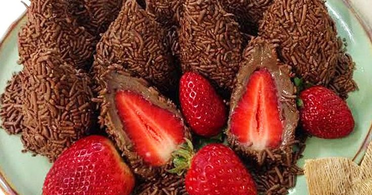

Arroz de Couve-Flor

- Arroz
- Couve-Flor
- Cebola Média
- Azeite
Deixe a couve-flor picada. Adicione os ingredientes e refogue bem. Adicione sal, tampe a panela e deixe cozinhar.
Bolo de Café
- Farinha de Trigo
- Açúcar
- Café Coado
- Chocolate em Pó
- Ovos
Bata o açúcar, as gemas e o café. Adicione farinha e chocolate e mexa bem. Bata as claras e junte à mistura.
Coxinha de Brigadeiro
- Leite Condensado
- Chocolate em Pó
- Manteiga
- Morango
- Chocolate Granulado
Junte o leite condensado, chocolate em pó e manteiga. Aqueça no fogo baixo. Envolva os morangos e passe no granulado.
Panqueca

- 1 xícara de chá de leite
- 2 ovos
- 1 colher de chá de sal
- 4 colheres de sopa de óleo
- 1 xícara e meia de farinha de trigo
No liquidificador, coloque o leite, os ovos, o sal, o óleo e a farinha de trigo, depois Bata os ingredientes até a massa ficar homogênea. Unte uma frigideira antiaderente com óleo. Usando uma concha, coloque uma porção da massa na frigideira e espalhe por toda a superfície. Deixe dourar dos dois lados. Use o molho e recheio de sua preferência para a panqueca e aqueça no forno antes de servir.
Ovo Cozido
- 4 Ovos
Em uma panela, coloque água suficiente para cobrir os ovos e deixe ferver. Quando a água estiver fervendo, coloque os ovos delicadamente para não rachar e cozinhe pelo tempo ideal para o ponto desejado. Logo Após é só servir!.